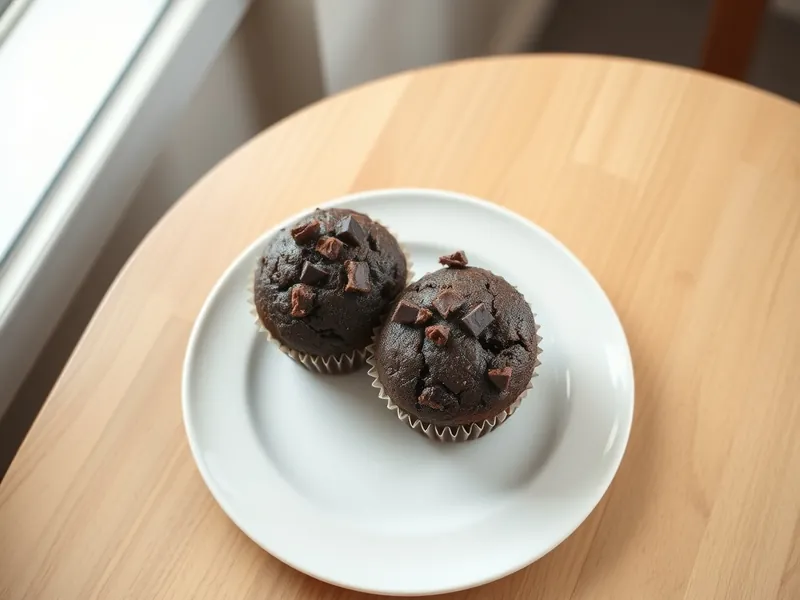

Шоколадные маффины с кусочками шоколада
Влажные маффины на кефире с какао и кусочками тёмного шоколада
50 мин12 порц.265 ккал на порциюБ 5 · Ж 13 · У 31Американская кухня
Открыть в приложении: порции, таймеры, список покупок
Продукты на 12 порц.
- Мука пшеничная220 г
- Какао-порошок3 ст. л.
- Сахар150 г
- Яйцо куриное2 шт
- Кефир1 стак.
- Растительное масло100 мл
- Разрыхлитель1,5 ч. л.
- Сода0,25 ч. л.
- Шоколад тёмный100 г
- Соль1 щеп.
- Ванильный сахар1 шт
Как готовить
- Разогрейте духовку до 180 °C (средний жар) и вставьте в форму для маффинов 12 бумажных капсул.
- Смешайте муку, какао, разрыхлитель, соду и соль.
- В другой миске взбейте вилкой яйца с сахаром и ванильным сахаром, влейте кефир и масло.
- Соедините жидкую и сухую смеси лопаткой за 30 секунд: комочки допустимы, а долгое перемешивание делает маффины резиновыми. Вмешайте 70 г порубленного шоколада.
- Разложите тесто по капсулам на три четверти высоты и положите сверху оставшиеся кусочки шоколада.
- Выпекайте 20-25 минут, пока шпажка не начнёт выходить с влажными крошками, но без жидкого теста. Остудите 10 минут.
Совет. Не открывайте духовку первые 15 минут: от холодного воздуха маффины оседают и не дают красивой шапочки.